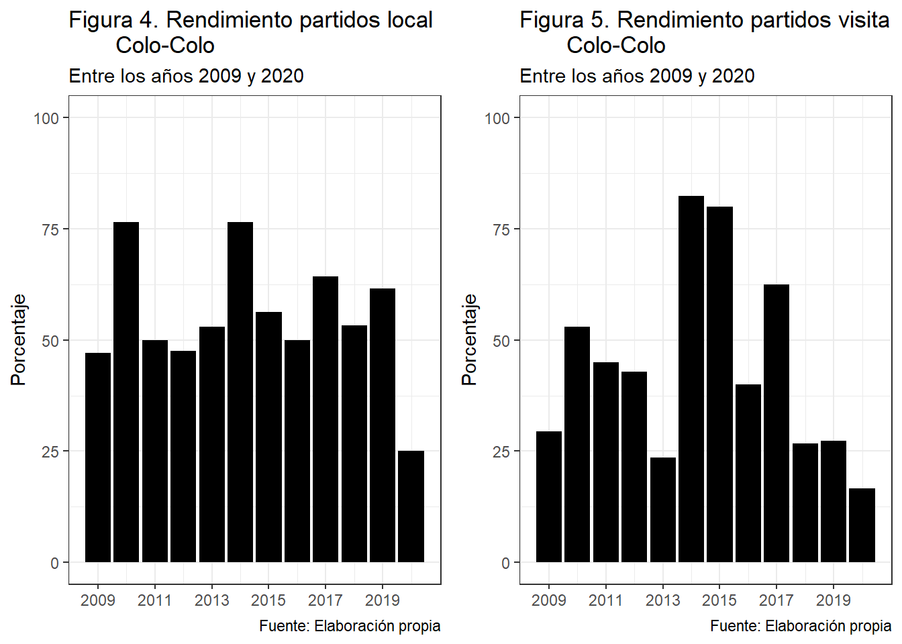
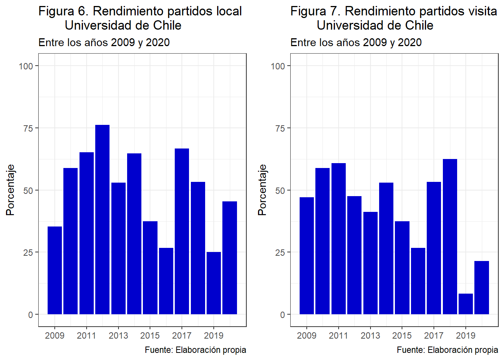

¿Qué equipo del fútbol chileno tienen mejor rendimiento?
Abstract
Actualmente hay una lucha en el fútbol chileno para decidir cual a sido el equipo con mejor rendimiento de los últimos años. Con el fin de lograr esclarecer esta interrogante, se analizo el desempeño de los clubes Colo-Colo, Universidad Catolica y Universidad de Chile entre los años 2009 y 2020. Se concluye que el club con mejor rendimiento entre los años analizados es Universidad Catolica.
Introducción
El fútbol en tierras chilenas comenzó en el año 1895 cuando los marines e inmigrantes ingleses comenzaron a llegar y deslumbraban a las personas de Valparaiso con su apasionado juego (Memoria Chilena). A partir de eso se empezó a divulgar y popularizar a lo largo y ancho del territorio nacional, evolucionando hasta como lo conocemos hoy en el que es el deporte más popular de nuestro país. Si nos centramos en la fama de cada club podemos decir que resaltan tres equipos cuyo nivel de popularidad es mayor (GFK Adimark), estos equipos son Colo-Colo con 42%, Universidad de Chile con 20% y Universidad Católica con 6%.
Actualmente existen sientos de datos los cuales nos ayudan aLos equipos mencionados anteriormente se preguntan: ¿Como le ha ido al club históricamente en los campeonatos?, ¿como le ha ido al equipo frente a los otros 2 clubes más populares?, ¿qué equipo es el mejor? Responder estas preguntas resulta relevante, ya que nos podría guiar a los resultados que obtendrá el equipo tanto a nivel histórico como a futuro.
Para lograr comprender mejor todos estos factores, se realizará un análisis a los datos de los resultados del fútbol chileno desde junio del año 2008 a mayo del año 2021. Se analizarán el desempeño tanto el juego de local, como el de visita, los enfrentamientos directos entre los clubes más populares y se complementara con la información de ANFP para saber qué equipo salió campeón ese año y si se relaciona con el rendimiento de los equipos analizados.
Este proyecto se iniciará con la filtración por año para ver cada uno de los rendimientos de los equipos, luego se hará una comparación a nivel general de a cuál equipo le ha ido mejor a lo largo de los años y si esto se relaciona con la cantidad de campeonatos ganados en esos años. A su vez veremos si estos tienen un rendimiento constante a través de los años. Continuando se realizará una comparativa en los enfrentamientos directos entre los tres equipos antes mencionados. Una vez realizada la comparativa se concluirá ¿cúal de estos equipos es el mejor del futbol chileno entre los años 2009 y 2020? En base a su rendimiento general y rendimiento frente a los otros dos clubes más populares del país.
Preprocesamiento
La base de datos que será utilizada proviene del sitio web Kaggle.
Antes de iniciar este proyecto se realizara un preprocesamiento de los datos para así poder trabajar de manera mas eficiente. Para ello a la variable Date,que en la base de datos original es de tipo chr, se le aplicara la función dmy de la libreria lubridate para que así la variable Date sea de tipo fecha. Realizado esto nuestra base de datos queda con las siguientes variables:
| Variable | Tipo | Descripcion |
|---|---|---|
| DATE | Fecha | Fecha exacta del Partido |
| HT | Caracter | Nombre del Equipo local |
| AT | Caracter | Nombre del Equipo de Visita |
| HS | Númerica | Goles Equipo Local |
| AS | Númerica | Goles Equipo de Visita |
El código de preprocesamiento se encuentra disponible dentro del repositorio.
Inicio Proyecto
Caracteristicas del Campeonato Chileno
A modo de esclarecer cómo funciona el futbol chileno, se especificará cada tipo de campeonato que ha ocurrido en Chile. Iniciando por el formato de Playoff, este consiste en que se jueguen partidos todos contra todos solo una vez y se clasifican los primeros 8 a la siguiente fase, donde se enfrentan en partidos de ida y vuelta en llaves iniciando en cuartos de final así sucesivamente hasta llegar a la final, la cual también es a partido de ida y vuelta, a si el campeón se decide con el equipo que gane y/o tenga mejor diferencia de gol en los partidos de la final. El segundo tipo de torneos que se aplicó en el futbol Chileno fueron los torneos de apertura y clausura, en este tipo de torneos se enfrentan los equipos todos contra todos solo una vez, el equipo que consiguió más puntos se consagra campeón. Por último y el formato que tenemos actualmente es el de torneo largo, este consiste en partidos de ida y vuelta todos contra todos y el equipo que consigue más puntos es el que se consagra campeón.
Comparativa
Los resultados que se mostraran a continuacion se iniciaron con la comparativa de los rendimientos de los equipos, para luego finalizar con el analisis individual de estos mismos.
Para comenzar el analisis de los datos se creo una funcion que calcula los resultados de los partidos de los equipos, es decir, en cada año se calculo la cantidad de partidos ganados, perdidos y empatados. Esta funcion fue aplicada a los equipos que se analizarán.
Código
puntos <- function(dato){
gano = 0
empa = 0
perdi = 0
for (i in 1:(length((dato$HT)))){
if (dato$HS[i] > dato$AS[i]){
gano = gano + 1
}else if(dato$HS[i] == dato$AS[i]){
empa = empa + 1
}else {
perdi = perdi +1
}}
resultados = c(gano,empa,perdi)
return(resultados)
}Para poder realizar un analisis del rendimiento de estos clubes se creó el siguiente gráfico con los partidos ganados:

Como se obversa en la Figura 1 y considerando que en el año 2013 ocurre el cambio de torneos con PlayOffs a torneos cortos de apertura y clausura, es posible notar que el equipo que domino en la era de los PlayOffs fue Universidad de Chile. Este equipo entre los años 2009 y 2013 obtuvo tres campeonatos, en comparación con Colo-Colo y Universidad Catolica que obtuvieron uno cada uno. Una vez iniciados los torneos con Apertura y Clausura podemos obsevar que el equipo con mejor rendimiento fue Colo-Colo, pero en termino de campeonatos cada equipo obtuvo 2. Llegando a la era de torneos largos podemos decir que el equipo más constante fue Universidad Catolica. Equipo que obtuvo 3 campeonatos en este tipo de torneos, a su vez podemos notar una considerable baja en el rendimiento de Colo-Colo y Universidad de Chile en este tipo de torneos.
En función de lo anterior resulta difícil decidir qué equipo es el que a tenido un mejor rendimiento, ya que, cada uno de estos clubes ha tenido su pick de rendimiento en distintas eras del fútbol chileno. Para lograr llegar a la respuesta que se busca en este proyecto, analizarmos el rendimiento individual de estos equipos, en terminos de partidos ganados, perdidos y empatados.
Análisis individual de los equipos.
Partiremos analizando el rendimiento de Universidad Catolica, para esto veremos el rendimiento tanto en el juego de local como cuando el partido fue de visita. Para ellos se crearon los siguientes gráficos:
Podemos notar que Universidad Catolica posee un rendimiento jugando de local bastante constante, en la mayoria de los años poseen un rendimiento sobre el 50% de victorias. Sin embargo cuando les toco jugar de visita este rendimiento no se logro mantener constante tiniendo años muy buenos como lo fueron los años 2013 y 2019 donde obtienen sobre un 70% de victorias, a su vez años malos como lo son los años 2017 y 2018 donde no logran alcanzar el 25% de victorias jugando de visitante.
Para poder comparar estos rendimientos con los demas equipos se mostrara las siguiente tabla:
Código
ll <- round(mean(glocal_uc),digits = 2)
vv <- round(mean(gvisita_uc),digits = 2)
promediouc <- data.frame(ll,vv) %>%
gt() %>%
tab_header(title = "Promedio rendimiento UC") %>%
cols_label(ll = "Local",
vv = "Visita")
promediouc| Promedio rendimiento UC | |
| Local | Visita |
|---|---|
| 0.65 | 0.45 |
Podemos ver que Universidad Catolica posee un rendimiento de local bastante alto, es decir, este equipo gana el 65% de los partidos en condición de local, a su vez podemos ver que solo alcanza el 45% de victorias cuando es en condición de visita.
Seguimos con el rendimiento de Colo-Colo. Al igual que con el equipo anterior se iniciara con su rendimiento tanto jugando de local como de visita.

Notamos que Colo-Colo no posee un rendimiento constante por sobre el 50% en sus partidos de local como si lo tenia el anterior equipo, ya que en el año 2020 este apenas llega a 25% es más, podemos decir que su rendimiento en el año 2020 ha ido a la baja tanto jugando de local como de visita. Jugando de visita su rendimiento es bastante bajo, ya que, en solo 4 años logra superar el 50%.
Al igual que en caso anterior para lograr comparar estos resultados se creo la siguiente tabla:
Código
ll <- round(mean(glocal_cc),digits = 2)
vv <- round(mean(gvisita_cc),digits = 2)
promediocc <- data.frame(ll,vv) %>%
gt() %>%
tab_header(title = "Rendimiento CC") %>%
cols_label(ll = "Local",
vv = "Visita")
promediocc| Rendimiento CC | |
| Local | Visita |
|---|---|
| 0.55 | 0.44 |
Podemos concluir de la tabla anterior que Colo-Colo alcanza el 55% de victorias cuando juega de local y solo un 44% de estas mismas cuando le ha tocado jugar de forastero.
Y finalmente realizaremos el mismo procedimiento para el club Universidad de Chile, iniciando por ver su rendimiento jugando de local y de visita.

Vemos que el rendimiento jugando de local es más inconsistente que el rendimiento de los equipos anteriores teniendo varios años en los cuales no logra superar el 50% de victorias. Se puede ver que jugando de visita su rendimiento esta a la baja, aunque tenga repuntes en los años 2017 y 2018, anteriormente a este sus resultados jugando de visita tendian a la baja.
Código
ll <- round(mean(glocal_u),digits = 2)
vv <- round(mean(gvisita_u),digits = 2)
promediou <- data.frame(ll,vv) %>%
gt() %>%
tab_header(title = "Rendimiento U") %>%
cols_label(ll = "Local",
vv = "Visita")
promediou| Rendimiento U | |
| Local | Visita |
|---|---|
| 0.51 | 0.43 |
Universidad de Chile solo alcanza el 43% de victorias cuando les ha tocado jugar de visita, este es el promedio más bajo de los 3 clubes, a su ves la “U” solo logra alcanzar el 51% de victorias cuando juega en condición de local, lo cual es tambien el promedio más bajo de los equipos analizados.
Por lo mencionado anterior podemos concluir que Universidad Catolica es el equipo que posee mejor rendimiento jugando tanto de local como de visita.
Generalización de análisis
Ahora generalizaremos los datos, es decir, nos gustaria saber como fue el rendimiento general de Universidad Catolica solo contando sus partidos ganados, perdidos y empatados. Para lograr visualizar esto se creo la siguiente tabla:
Código
gg <- round(mean(ganados_uc),digits = 0)
ee <- round(mean(empatados_uc),digits = 0)
pp <- round(mean(perdidos_uc),digits = 0)
promedio_uc <- data.frame(gg,ee,pp) %>%
gt() %>%
tab_spanner(label = "Promedio",columns = 1:3) %>%
tab_header(title = "Promedio rendimiento UC") %>%
cols_label(gg = "Ganados",
ee = "Empatados",
pp = "Perdidos")
promedio_uc| Promedio rendimiento UC | ||
| Promedio | ||
|---|---|---|
| Ganados | Empatados | Perdidos |
| 18 | 7 | 7 |
Podemos notar que su promedio de partidos ganados por año es aproximadamente 18 y su promedio de partidos perdidos es de 7, es decir, pierden pocos partidos por año.
Ahora se continuara con los datos para los partidos ganados, empatados y perdidos del equipo Colo-Colo. Para esto se creo la siguiente tabla:
Código
gg <- round(mean(ganados_cc),digits = 0)
ee <- round(mean(empatados_cc),digits = 0)
pp <- round(mean(perdidos_cc),digits = 0)
promedio_cc <- data.frame(gg,ee,pp) %>%
gt() %>%
tab_spanner(label = "Promedio",columns = 1:3) %>%
tab_header(title = "Promedio rendimiento CC") %>%
cols_label(gg = "Ganados",
ee = "Empatados",
pp = "Perdidos")
promedio_cc| Promedio rendimiento CC | ||
| Promedio | ||
|---|---|---|
| Ganados | Empatados | Perdidos |
| 16 | 7 | 9 |
Podemos notar que el promedio de partidos ganados de Colo-Colo es de 16 por año, lo cual es menor al promedio de Universidad Catolica. A su vez, Colo-Colo posee un mayor promedio de partidos perdidos, llegando esta a 9 partidos por año.
Ahora nos centraremos en ver el rendimiento de Universidad de Chile, para esto se presenta la siguiente tabla:
Código
gg <- round(mean(ganados_u),digits = 0)
ee <- round(mean(empatados_u),digits = 0)
pp <- round(mean(perdidos_u),digits = 0)
promedio_u <- data.frame(gg,ee,pp) %>%
gt() %>%
tab_spanner(label = "Promedio",columns = 1:3) %>%
tab_header(title = "Promedio rendimiento U") %>%
cols_label(gg = "Ganados",
ee = "Empatados",
pp = "Perdidos")
promedio_u| Promedio rendimiento U | ||
| Promedio | ||
|---|---|---|
| Ganados | Empatados | Perdidos |
| 16 | 8 | 8 |
De la tabla anterior vemos que Universidad de Chile posee un promedio de 16 partidos ganados por año, aproximadamente mismo promedio que Colo-Colo, lo mismo sucede con la cantidad de partidos perdidos, ambos promedian aproximadamente 9 partidos perdidos por año.
Comparando todas las tablas con el promedio de los rendimientos de estos equipos podemos decir que Universidad Catolica es el equipo más constante entre los años 2009 y 2020, ya que posee el mejor promedio de partidos ganados de local con un 65%, a su vez que posee el mejor rendimiento jugando de visita con un 45%, tambien posee el mejor promedio de partidos ganados por año con aproximadamente 18 partidos y tiene el promedio más bajo en partidos perdidos con aproximadamente 7 perdidos por año.
Es por esto que Universidad Catolica es el equipo más constante.
Enfrentamientos directos
Ahora bien, este club ¿Seguirá siendo el mejor equipo cuando se ve enfrentado a los otros dos equipos?. Para responder esta pregunta se realizaran tablas en las cuales se vera que equipo tiene el mejor rendimiento a la hora de enfrentarse a sus 2 más grandes rivales.
Se iniciara con el enfrentamiento entre Colo-Colo y Universidad Catolica.
Código
ccvsuc <- Datos %>%
filter(HT == "Colo Colo", AT == "Universidad Catolica")
ucvscc <- Datos %>%
filter(HT == "Universidad Catolica",AT == "Colo Colo")
re <- puntos(ccvsuc)
er <- puntos(ucvscc)
d1<- c(re[1] + er[3],re[2] + er[2],re[3] + er[1])
cc <- c("Ganados CC", "Empatados", "Ganados UC")
tabla <- data.frame(cc,d1) %>% gt() %>%
tab_header(title = "Enfrentamientos directos CC vs UC",subtitle = "Entre los años 2009 y 2020") %>%
cols_label(cc = "", d1 = "Cantidad")
tabla| Enfrentamientos directos CC vs UC | |
| Entre los años 2009 y 2020 | |
| Cantidad | |
|---|---|
| Ganados CC | 8 |
| Empatados | 6 |
| Ganados UC | 12 |
Viendo esta tabla, aunque por una diferencia de 4 partidos, se llega a la conclusion que entre los años 2009 y 2020, Universidad Catolica es el club que ha dominado este ya denominado “Clásico”.
Continuaremos con el denominado Superclasico del fútbol chileno, es decir, los enfrentamientos entre Colo-Colo y Universidad de Chile.
Código
ccvsu <- Datos %>%
filter(HT == "Colo Colo", AT == "Universidad de Chile")
uvscc <- Datos %>%
filter(HT == "Universidad de Chile",AT == "Colo Colo")
ucc <- puntos(ccvsu)
ccu <- puntos(uvscc)
d2 <- c(ucc[1] + ccu[3],ucc[2] + ccu[2],ucc[3] + ccu[1])
cu <- c("Ganados CC", "Empatados", "Ganados U")
tabla2 <- data.frame(cu,d2) %>% gt() %>%
tab_header(title = "Enfrentamientos directos CC vs U",subtitle = "Entre los años 2009 y 2020") %>%
cols_label(cu = "", d2 = "Cantidad")
tabla2| Enfrentamientos directos CC vs U | |
| Entre los años 2009 y 2020 | |
| Cantidad | |
|---|---|
| Ganados CC | 18 |
| Empatados | 6 |
| Ganados U | 4 |
Analizando los resultados de la tabla anterior, llegamos a la conclusion que existe un dominio bastante notorio por parte de Colo-Colo frente a Universidad de Chile, es decir, en enfrentamientos directos Colo-Colo tiene un mejor rendimiento.
Finalizamos con el denominado “Clásico Universitario”, es decir, los partidos de Universidad Catolica contra Universidad de Chile.
Código
ucvsu <- Datos %>%
filter(HT == "Universidad Catolica", AT == "Universidad de Chile")
uvsuc <- Datos %>%
filter(HT == "Universidad de Chile",AT == "Universidad Catolica")
ucu <- puntos(ucvsu)
uuc <- puntos(uvsuc)
d3 <- c(ucu[1] + uuc[3],ucu[2] + uuc[2],ucu[3] + uuc[1])
uc <- c("Ganados UC", "Empatados", "Ganados U")
tabla3 <- data.frame(uc,d3) %>% gt() %>%
tab_header(title = "Enfrentamientos directos UC vs U",subtitle = "Entre los años 2009 y 2020") %>%
cols_label(uc = "", d3 = "Cantidad")
tabla3| Enfrentamientos directos UC vs U | |
| Entre los años 2009 y 2020 | |
| Cantidad | |
|---|---|
| Ganados UC | 12 |
| Empatados | 9 |
| Ganados U | 8 |
Podemos ver que Universidad Catolica es el equipo que predomina en este enfrentamiento. Al igual que contra Colo Colo, la “UC” posee 4 victorias más que su rival.
Esto reafirma lo obtenido en los analisis indiviales de los equipos.
Conclusión
Tal como se mostro a lo largo de este informe, vemos que los rendimientos de los equipos a lo largo de los años han sido bastante parejos, tanto en partidos ganamos como en titulos obtenidos.
A partir del analisis individual y del analisis de los enfrentamientos directos de estos equipos, es posible afirmar que el club Universidad Catolica es aquel que posee un mejor rendimiento entre los años 2009 y 2020, basados en el promedio de partidos ganados, empatados y perdidos.
Se sugiere volver a realizar este analisis con los datos y/o resultados de los años 2021 y 2022 con el fin de identificar posibles cambios en el rendimiento individual de los equipos tanto asi como un posible cambio en el equipo con mejor rendimiento.